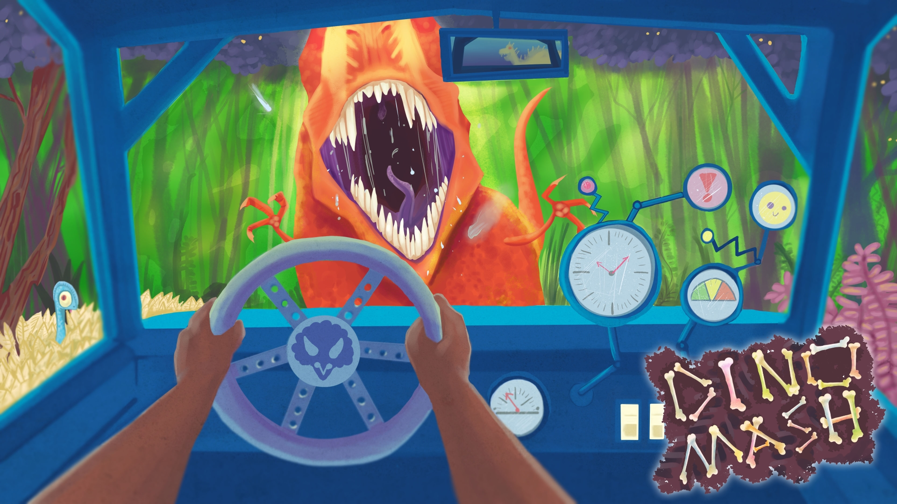
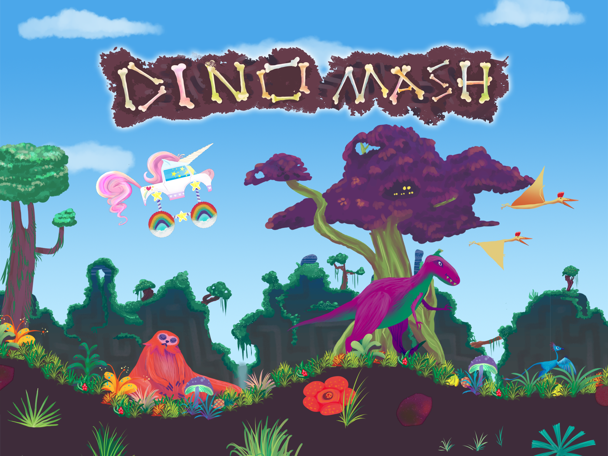
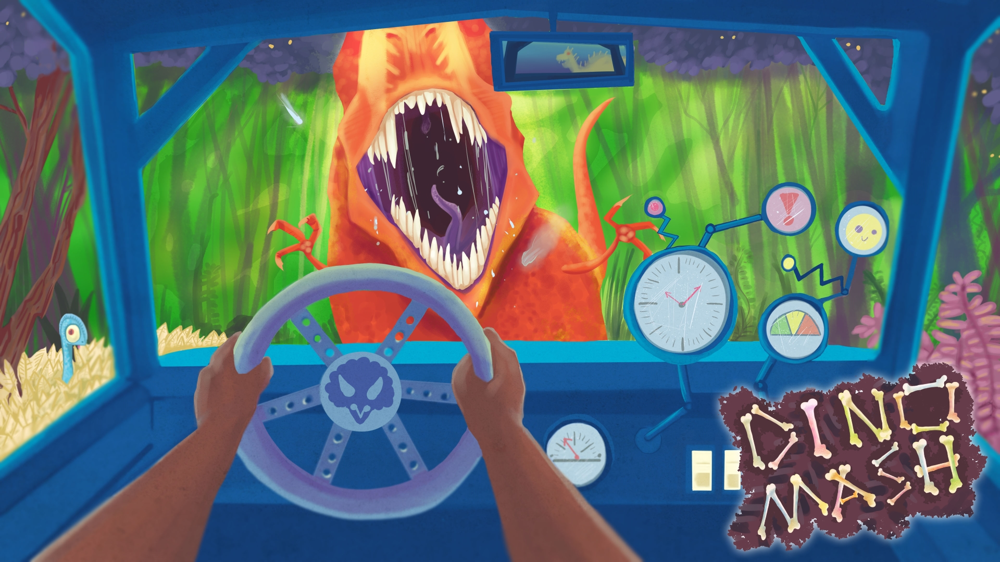
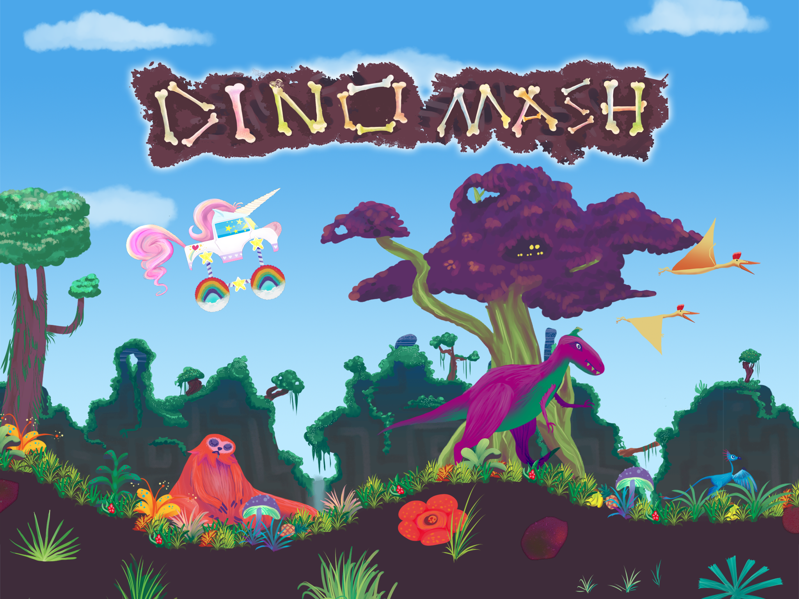
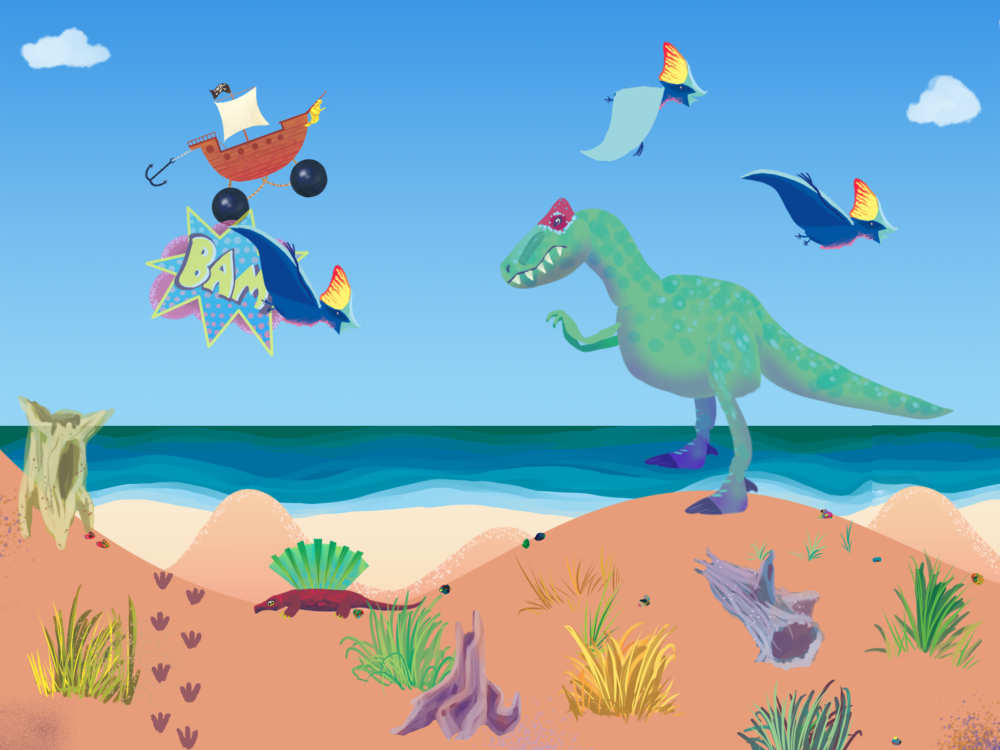
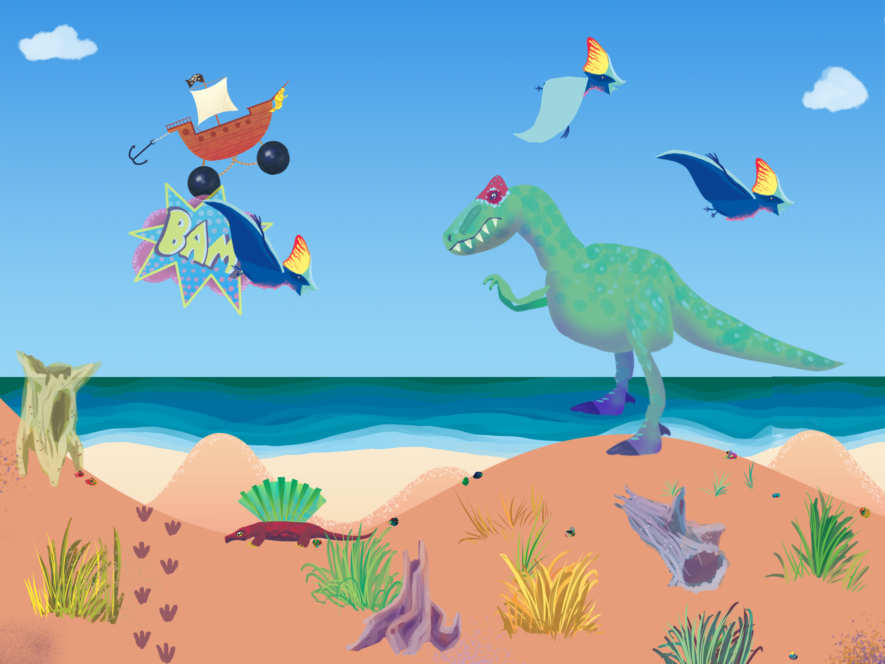
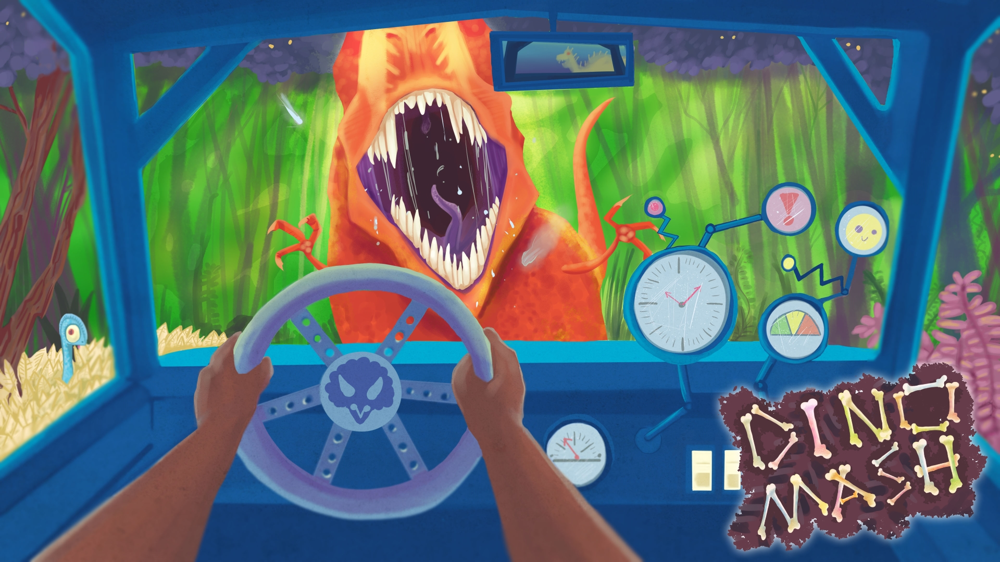
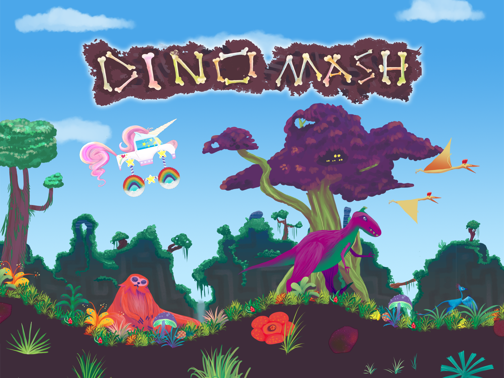
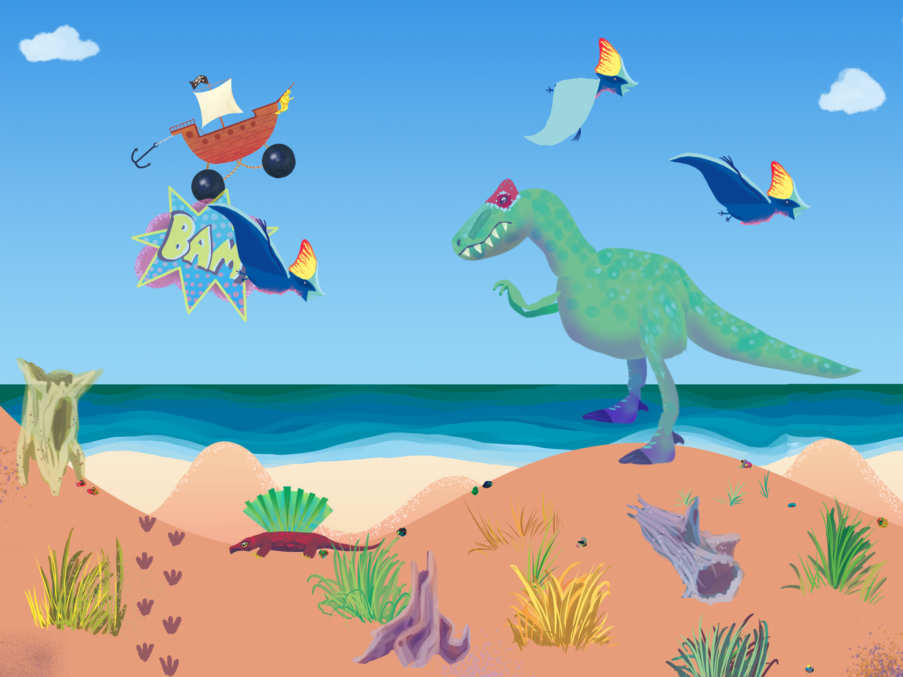

Game Name: DinoMash Developer: LabRat Games Publisher: Everapp Studios Release Date: June 15th, 2016 Platforms: iOS and Android Phones and Tablets Website: http://dinomash.com
PressKit
Description
During a monster truck rally, a time warp occurred placing you back in Jurassic times. With no fuel, you must utilize the landscape to maintain speed. Dive down hills, launch through the air, and chain bounces off dinosaurs to reach crazy speeds! Collect a variety of Vehicles, each offering a new way to play the game. How far can you make it? Are you stuck with the dinosaurs, or is there a way back to the future?
Features
- One-button controls that are deceptively simple, yet genuinely addictive.
- Travel through five spectacular prehistoric environments
- Collect 30 vehicles, each offering a unique flavor of the game mechanic. A truck for every personality.
- Gorgeous painterly artwork with over 20 goofy hand drawn dinosaurs.
- Completely free to play with no imposing ads
- Fun challenges such as, "bounce off 5 dinosaurs in a row". Earn awesome rewards!
- Online leaderboards to compete with others around the globe.
- Many more surprises! Play to find out (:
QUESTION & ANSWER
So What is DinoMash? DinoMash is an addictive one button driving game that is deceptively simple. Just tap and hold to dive down hills, and release to launch through the air. Surf the bumpy landscape with the ultimate goal of getting as far out as possible. Oh and to make things interesting, you are warped back in time and dinosaurs are everywhere! You can use them to ‘bounce and boost’ your mad driving skills. Reach crazy fast speeds, soar through the air, and chain bounces to become a DinoMashter! Okay, Why is It Fun? You're not just pushing accelerate to drive. With no fuel, you must "surf" the hills of five prehistroic landscapes. Movement in DinoMash is based on timing, resulting in an incredibly satisfying surfing mechanic that places your mind in a "flow" state. It is easy to get the hang of, but hard to master. Every round you will learn additional strategies and improve your skills. New obstacles and dinosaurs will keep you on your toes! The Mechanic Sounds Fun...But Why Keep Playing? New dinosaurs, vehicles, and landscapes will keep you itching to improve in order to see what lies ahead. Want to play as an Ice Cream Truck? Unicorn? How about a Turtle Tank? We got it all. Each vehicles offers a brand new experience by changing the "feel" of the truck, and consequently, the game mechanic. Smashed the leaderboards with the Cow Truck? It might not be so easy with the Pizza Truck. Earn a place on every high score board! Additionally, round based challenges will truly test your skills. I bet you can't stay airborne for 10 seconds! Finally, we have some really awesome updates ahead. Although causal in nature, DinoMash gets really competitive. We plan on adding head to head online competitive play, along with Facebook based scoreboards to face off with your friends. Finally, we will create unique upgrades for each truck, allowing more room for strategy while further differentiating the vehicles. So is this Game Really Free? Yes! We worked hard to make sure the game stays completely free, and additionally, doesn't trick or obstruct the player in any way. There are no obtrusive ads, as they only appear upon the players request. We decided to offer 30 unique ways to experience the game through our variety of vehicles, and if the player wants a specific one NOW, they can purchase it. Otherwise, you can keep playing the game with the hopes of earning the truck of your dreams. But please, don't hesitate to support us!CREDITS
Design: Kurt Waldowski, Arjun Singh Programming: Kurt Waldowski with pieces done by Daniel Firsht & Brandon Mazzara Art: Hailey McLaughlin Sound & Music: Joe Schlamme Website & Social Media: Kurt Waldowski Special Thanks: Scott Waldowski, David Desellier, and Sophie Brunau-ZaragozaCONTACT
Inquiries: dinomashed@gmail.com Everapp Studios: arjunsingh@everappstudios.com LabRat Games: kurtwaldowski@gmail.com Twitter: DinoMash @Dino_Mash | Arjun Singh @Singarju | Kurt Waldowski @kurtwaldo | LabRat Games @mobilelabratMEDIA/ASSETS
LOGO (1499x350)
 LOGO STACKED (1118x787)
APP ICON (1024x1024)
PROMO BANNER T-REX CHASE (1920x1080)
PROMO BANNER TRUCK AIR (1920x1080)
LOGO STACKED (1118x787)
APP ICON (1024x1024)
PROMO BANNER T-REX CHASE (1920x1080)
PROMO BANNER TRUCK AIR (1920x1080)
 PROMO BANNER FIRST PERSON(1920x1080)

SCREENSHOTS (2048x1536)

PROMO BANNER FIRST PERSON(1920x1080)

SCREENSHOTS (2048x1536)

 


PROMO BANNER FIRST PERSON(1920x1080)

SCREENSHOTS (2048x1536)

